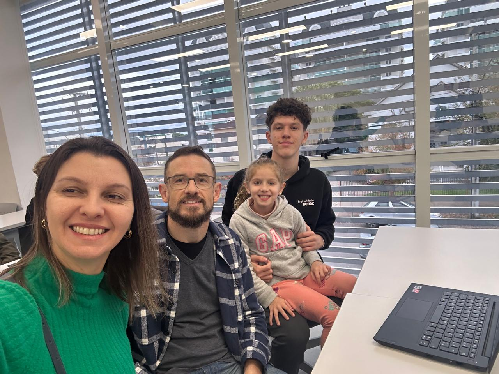

Uma viagem para a Disney em Orlando com a família pode ser uma experiência emocionante e memorável! Desde o momento em que você começa a planejar até o último dia nos parques temáticos, cada momento é cheio de diversão e magia. Começando pelo planejamento, há tantas coisas para se considerar: escolher as datas da viagem, reservar passagens aéreas, encontrar acomodações que atendam às necessidades de todos, decidir quais parques visitar e organizar o transporte local. É uma jornada de preparação que pode envolver toda a família, desde decidir quais atrações são imperdíveis até escolher onde fazer as refeições. Uma vez em Orlando, a energia é contagiante. Os parques da Disney oferecem algo para todas as idades, desde os clássicos personagens da Disney até montanhas-russas emocionantes e shows deslumbrantes. Ver o rosto dos membros da família iluminar-se quando encontram seu personagem favorito ou experimentam uma atração incrível pela primeira vez é impagável. Além dos parques temáticos, há muito mais para explorar em Orlando, como os parques aquáticos, os outlets para fazer compras e uma variedade de restaurantes que oferecem desde lanches rápidos até jantares temáticos. Mas uma das partes mais preciosas de uma viagem como essa é o tempo em família. Entre as risadas nas filas das atrações, as fotos ao lado do Castelo da Cinderela e os momentos de relaxamento à beira da piscina do hotel, é uma oportunidade para se reconectar e criar lembranças que durarão para sempre.
Uma viagem para Veneza, na Itália, é uma experiência verdadeiramente única e romântica. Desde o momento em que você põe os pés nesta cidade flutuante até o último passeio de gôndola pelos canais serenos, Veneza cativa os visitantes com sua beleza e charme incomparáveis. Ao chegar, você será imediatamente envolvido pela atmosfera mágica de Veneza. As ruas estreitas e sinuosas, os canais serenos pontilhados por pontes elegantes e os edifícios coloridos que se erguem das águas criam um cenário que parece saído de um conto de fadas. Um dos destaques de uma viagem a Veneza é explorar os canais de gôndola. Deslizar silenciosamente pelas águas, passando por palácios antigos e sob pontes históricas, oferece uma perspectiva única da cidade e uma sensação de romance que é difícil de replicar em qualquer outro lugar. Além dos passeios de gôndola, há muito para ver e fazer em Veneza. Você pode visitar a icônica Praça de São Marcos, lar da deslumbrante Basílica de São Marcos e do imponente Palácio Ducal. Não se esqueça de subir ao Campanário de São Marcos para desfrutar de uma vista panorâmica deslumbrante da cidade. Explorar os labirintos de ruas estreitas de Veneza também é uma aventura por si só. Descubra encantadoras praças escondidas, lojas de artesanato local e restaurantes acolhedores que oferecem delícias culinárias venezianas autênticas, como risotos cremosos e frutos do mar frescos. E não podemos esquecer a rica história e cultura de Veneza, que podem ser exploradas em museus fascinantes como o Palácio Ca' d'Oro e a Galeria da Academia. Uma viagem a Veneza é verdadeiramente uma experiência inesquecível, repleta de romance, beleza e charme italiano.
Oi familia só tenho a agradecer por tudo que ja me proporcionaram, de coisa materiais e coisas fisicas e emocionais. Obrigado por serem pais responsaveis e se preocuparem comigo sem duvidas os melhores pais que eu podeira ter. E para a Alice tambem agradeço por ser uma irmã legal, só que para de cuspir em mim e me bater, mas tirando isso está tudo certo.ito o senac.E também um abraço para o Jack também.
